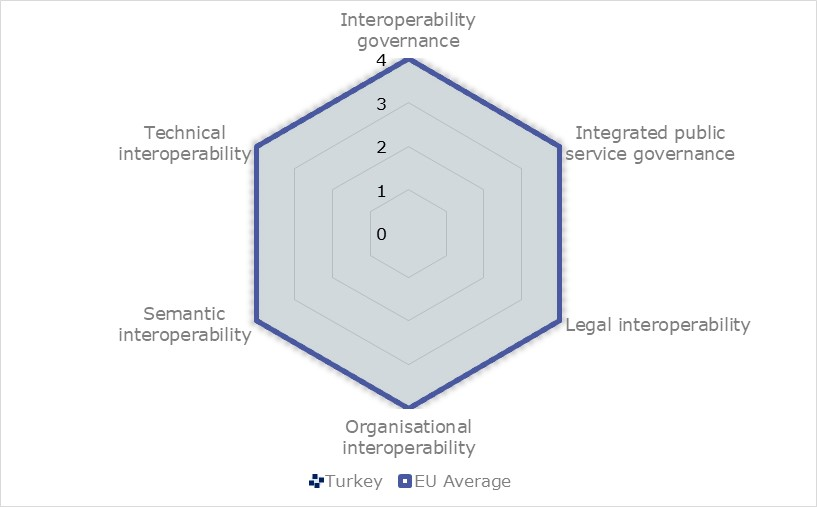
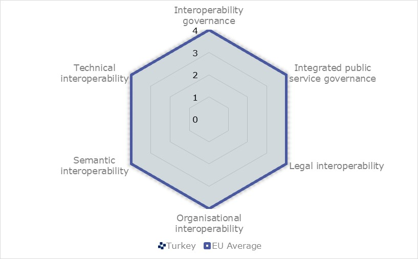
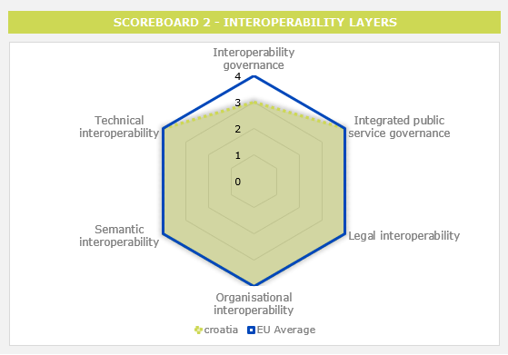

Digital Government Factsheet 2019
Cyprus
Table of Contents
Digital Government Highlights 6
Digital Government Political Communications 7
Digital Government Legislation 13
Digital Government Governance 16
Digital Government Infrastructure 22
Digital Government Services for Citizens 29
Digital Government Services for Businesses 39
Country Profile
Basic data
Population: 8642 36 inhabitants (2018)
GDP at market prices: 20 73 million Euros (2018)
GDP per inhabitant in PPS (Purchasing Power Standard EU 28=100): 85 (2017)
GDP growth rate: 3.9% (2018)
Inflation rate: 0.8% (2018)
Unemployment rate: 8.4% (2018)
General government gross debt (Percentage of GDP): 102.5% (2018)
General government deficit/surplus (Percentage of GDP): -4.8% (2018)
Area: 9 253km2
Capital city: Nicosia
Official EU language: Greek
Currency: Euro
Source: Eurostat (last update: 23 May 2019)
Digital Government Indicators
The following graphs present data for the latest Generic Information Society Indicators for Cyprus compared to the EU average. Statistical indicators in this section reflect those of Eurostat at the time the Edition is being prepared.
Percentage of individuals using the internet for interacting with public authorities in Cyprus | Percentage of individuals using the internet for obtaining information from public authorities in Cyprus |
| |
Percentage of individuals using the internet for downloading official forms from public authorities in Cyprus | Percentage of individuals using the internet for sending filled forms to public authorities in Cyprus |
Digital Government State of Play
The graph below is the result of the latest eGovernment Benchmark report, which monitors the development of eGovernment in Europe, based on specific indicators. These indicators are clustered within four main top-level benchmarks:
- User Centricity – indicates to what extent (information about) a service is provided online and how this is perceived.
- Transparency– indicates to what extent governments are transparent regarding: i) their own responsibilities and performance, ii) the process of service delivery and iii) personal data involved.
- Cross-Border Mobility – indicates to what extent EU citizens and businesses can use online services in another country.
- Key Enablers – indicates the extent to which five technical pre-conditions are available online. There are: Identification (eID), Electronic documents (eDocuments), Authoritative Sources, and Digital Post. Digital Post refers to the possibility that governments communicate electronically-only with citizens or entrepreneurs through e.g. personal mailboxes or other digital mail solutions.
These top-level benchmarks are measured using a life-events (e.g. mystery shopping) approach. Eight life events are included in the overall eGovernment performance score. Four of these life events were measured in 2013, 2015 and 2017 and the other four were measured in 2012, 2014, 2016, and again in 2018. The life events measured in 2017 were Regular business operations, Moving, Owning and driving a car and Starting a small claims procedure. The life events measured in 2018 are Business start-up, Losing and finding a job, Family life and Studying.

Source: eGovernment Benchmark Report 2018 Country Factsheets
Digital Government Highlights
Digital Government Political Communications
The fight against undeclared work went digital thanks to ERGANI.
The Justice system initiated a key reform to adopt a web-based Court administration system (eJustice system).
Digital Government Legislations
National legislation (Ν.50(Ι)/2019) related to Accessibility of Websites and Mobile Applications of Public Sector Bodies was harmonised with the EU Directive of April 2019.
Personal data protection became GDPR compliant thanks to the Law Providing for the Protection of Natural Persons with Regard to the Processing of Personal Data and for the Free Movement of Such Data of 2018 (Law 125(I)/2018).
The health system moved towards cross-border integration with the Law on eHealth 59(I)/2019.
Digital Government Governance
Dr. Elisavet Constantinou, Ministry of Health, was appointed as the National Contact Point for eHealth.
Digital Government Infrastructure
A revamped National Web Portal for Open Data was launched with new features to support the re-use of open data, as well as a larger catalogue of datasets.
The Electronic Exchange of Social Insurance Information (EESSI) was adopted and together with the project National Contact Point for Cross Border Healthcare, that is under development, they will prepare the Cypriot health system for cross-border integration.
Digital Government Services for Citizens and Businesses
- The TaxisNet system was improved to enhance users’ experience and automatically calculate taxes.
- A new website was created to allow citizens and businesses to compare banks’ fees linked to their bank accounts. This tool allowed the public to be informed on current charges per service, thus increasing transparency and provide important information. The comparison included 11 financial institutions operating in Cyprus.
Digital Government Political Communications
Specific political communications on digital government
- Target 1: Broaden coverage (infrastructure rollout), expand broadband and establish regulatory framework of networks;
- Target 2: Modernisation of public administration and provision of more applications and services to citizens and enterprises, namely, eGovernment and eHealth services;
- Target 3: Inclusion of all (including vulnerable groups) into Digital Cyprus. Increase penetration and participation of all citizens and businesses in the digital society;
- Target 4: Education and Learning - improvement of eSkills and digital literacy;
- Target 5: Promotion of digital entrepreneurship;
- Target 6: ICT for the environment - promotion of green ICT.
- Learning how to use basic eGovernment services such as the Taxisnet, an online payment service for contributions to social insurance services, and the Ariadni portal, a government secure gateway;
- Improving basic internet skills.
Training programmes were offered in urban and regional areas to cover the needs of municipalities and smaller communities. From September 2017 to December 2018, 305 workshops were conducted involving more than 4.000 participants. This programme focused on the benefits coming from eGovernment to increase awareness and take up of existing eServices by all.
eGovernment Strategy 2014-2020
- Enhancement of public sector capacity while reducing operational costs;
- Delivering additional eServices, which will be flexible, accessible, complete, simple and secure;
- Facilitate cross-border collaboration at European level.
The Start-up visa scheme operated on a pilot basis until February 2019, and then the duration of the programme was extended for an additional two years. In this timeframe, a maximum of 300 visas were issued. The project aimed at attracting talented entrepreneurs from the European Economic Area and outside the European Union. To this end, several typologies of facilitations were included to help them in the process of starting a new business.
The objective was to foster an ecosystem for the creation of new jobs through innovation and research. This programme was part of the Policy Statement on Strengthening the Entrepreneurial Ecosystem that is trying to revitalise the ICT sector through internal development and by attracting ICT giants.
eGovernment in Education
One of the main objectives was implementation of the School Management System (SMS) project, a computerised system intended to standardise and accelerate bureaucratic processes. SMS is a crucial element of the restructuring plan of the Ministry of Education and Culture, which aims to create an advanced computerised system which will ensure the proper information management and process automation. SMS will contribute to the streamlining of bureaucracy, reduction of high administrative costs and it will ensure the prompt provision of information, cooperation and support of various stakeholders. The different services offered by SMS will be gradually introduced until the expected ending date of the project in 2023. The total cost for the implementation of the system is EUR 9 million. It is co-funded by national state resources and the European Funding Management Unit (EFMU).
National Coalition for Digital Jobs
Public Administration Reform
Public Administration Reform is considered a very important structural change at creating flexible, modern and productive public services for the benefit of both citizens and businesses. The political responsibility and supervision of the reform was assigned to the Deputy Minister to the President, under the overall initiative of the Growth Strategy (Unit for Administrative Reform).
PAR aims to solve horizontal and sectoral issues. In relation to the horizontal/cross-cutting issues, one of the main pain points is human resource management (HRM) across the Public Sector. More specifically, the Government submitted to the House of Representatives a set of draft bills aiming at institutionalising the HRM’s reforms in respect of performance appraisal, promotion, Public Service Commission governance, mobility etc., as well as introducing a mechanism to regulate salary increases that will ensure the affordability and sustainability of the public wage bill.
With regards to sectoral issues, functional reviews were completed within the civil services domain (Ministries and Constitutional/Independent Services) aimed at the reorganisation of structures within the various ministries and independent authorities, and generally the provision of better services to businesses and citizens.
Action Plan on Better Regulation
The Action Plan for Better Regulation Under Implementation (approved by the Council of Ministers on the 29 October 2015), consisted of three priority axes:
- Simplification of procedures and legislation and the reduction of administrative burden;
- Better law-making and impact assessment of new legislation;
- Embedding the culture and enhancing relevant skills in relation to the Action Plan on Better Regulation.
The third, and final, progress report for the Action Plan for Better Regulation was followed by the Action Plan for the period 2019-2021. This Action Plan included policy areas of high priority for the reduction of administrative burden.
The new Impact Assessment (IA) mechanism, put in place in 2017 to undertake more focused and thorough impact assessments for new legislation, was embedded and is now a mandatory part of the legal drafting procedure. An IA report summarising the main findings and suggestions for the way forward was published in 2018. Its intention was to continue the training programme of government officials and further enhance implementation of the new impact assessment framework.
Further to the above three axes, the Action Plan also included actions that are being promoted under the pillar of eGovernment, which go hand in hand with the other Better Regulation initiatives.
Partnership Agreement
Information and Communication Technologies (ICT) is among the selected sectors for investment, with the main aim being the promotion of use of ICT in the public and private sector, for improving the competitiveness of the economy. The implementation of the PA is further specified in the Operational Programmes, which are determined according to the type of ESI Fund.
Operational Programme Competitiveness and Sustainable Development
The promotion of ICT Use is one of the seven axes of the Operational Programme (OP) Competitiveness and Sustainable Development 2014-2020. The budget of the axes is around EUR 86.5 million (13% of the OP’s total budget), which will be co-financed by the European Regional and Development Fund (ERDF) by EUR 73.5 million. Almost 70% of this budget was allocated for strengthening ICT applications for eGovernment, eLearning and eHealth.
Key enablers
Access to public information
No political communication was adopted in this field to date.
eID and Trust Services
National Scheme
In February 2019, the eGovernment Board made a new decision regarding the adoption of eIdentification: the Government will prepare a national scheme on eIdentification and eSignature by changing relevant legislations. The eIdentification providers will be authorised according to the national scheme and able to provide eID to the Cypriot citizens. A national scheme on eIdentification and eSignature is under preparation and amendments on the relevant legislations will be done. The national scheme is expected to be completed in 2020. Security aspects related to digital government.
Interconnection of base registries
No political communication was adopted in this field to date.
eProcurement
No political communication was adopted in this field to date.
Domain-specific political communications
The objectives of the Plan are:
- To ensure the roll-out and take-up of broadband for all, at increasing speeds, through fixed and wireless technology;
- Promote competition in electronic communications and reduce prices of broadband services and products;
- Connect the whole of Cyprus with high and ultra-high-speed networks;
- Address cyber threats and generally strengthen security in the digital networks;
- Enhance the international sub-marine cable network, connecting Cyprus with Europe, Middle East and Africa.
Reform of the Justice System
Information System for Countering Undeclared Work – ERGANI SYSTEM
Interoperability
No political communication was adopted in this field to date.
Emerging technologies
European Blockchain Partnership (EBP)
Digital Government Legislation
Specific legislation on digital government
No legislation was adopted in this field to date.
Key enablers
Access to public information
Access to Public Information Access Rights Act
In December 2017, the Law providing for the right of Access to Public Sector Information Law 184(Ι)/2017 was adopted and will enter into force on 2020, for the purpose of enhancing transparency within the public sector. The law provided citizens with the right to request and receive information, under certain conditions, from public authorities. Furthermore, the law created an obligation for public authorities to publish certain information on their websites to avoid submitting a request form to access this information. The Commissioner for Personal Data Protection was appointed as the supervisory authority for this law and will act as Information Commissioner.
Law Establishing Rules Governing the Re-use of Existing Information Held by Public Sector Bodies
The Cypriot transposition of European Directive 2003/98/EC is Law 132(I)/2006, passed by the House of Representatives on 12 October 2006. The European Commission was notified on 20 October 2006 that the transposition was completed. Cyprus transposed the provisions of the revised PSI Directive (2013/37/EC), the Re-Use of Public Sector Information Law of 2015 (Law 205(I)/2015, which entered into force on 23 December 2015. This Directive laid down the right of access and reuse of public sector information. The operation of the open data portal as a data repository was part of the effort to make public sector information available and exploitable without legal or technical constraints. The portal provides relevant metadata along with information regarding charging and licenses and is currently hosting over 1 000 datasets.
Accessibility of the Websites and Mobile Applications of Public Sector Bodies
Cyprus harmonised Cypriot legislation with Directive (EU) 2016/2102 of the European Parliament and of the Council 26 October 2016 on the Accessibility of the Websites and Mobile Applications of Public Sector Bodies. The legislation proposal was submitted to the House of Representatives towards the end of September 2018. The law (Ν.50(Ι)/2019) was approved and published on the Official Gazette of the Republic of Cyprus on 5 April, 2019.
eID and Trust Services
Legal Framework for Electronic Signatures and Associated Matters
By decision of the Council of Ministers in March 2008, the Department of Electronic Communications (DEC) was assigned the legal framework of Electronic Signatures. DEC, as the competent authority for the implementation of electronic signature framework in Cyprus, decided to modify the existing law governing Electronic Signatures (No. 188 (I)/2004), which entered into force on 30 April, 2012 (N. 86 (I) 2012). The amended Act was intended to better align with the provisions of Directive 1999/93/EC and to establish a more solid legal framework for the use and legal recognition of Electronic Signatures. In addition, in 2013 the Department issued the Electronic Signatures Regulations (Regulatory Administrative Act - RAA 267/2013). The Regulations defined the issuing procedures of the qualified certificates to be delivered by the Certification Service Providers.
On 1 July 2016, Regulation (EU) No. 910/2014 came into effect. It replaced the previous Directive for Electronic Signatures 1999/93/EC. It introduced new regulatory procedures for a number of new trust services such as electronic seals, electronic time stamps, electronic registered delivery services etc. To this end, the Department of Electronic Communications (DEC) harmonised the legislation on electronic identification and trust services for electronic transactions in the internal market with the above Regulations. Also, this legislation set DEC as the Competent Authority for the implementation of Regulation (EU) No. 910/2014, as the Supervisory Body under (Article 17 of the Regulation), and as the body responsible for keeping the national trusted list (Article 22 of Regulation).
Security aspects related to digital government
The Processing of Personal Data (Protection of Individuals) Law
The Processing of Personal Data (Protection of Individuals) Law (138(I)/2001) entered into force in November 2001 and was amended by Law 37(I)/2003. It complied with the acquis communitaire, and especially the European Directive 95/46/EC on Data Protection. On 31 December, 2007, the 'Retention of Telecommunication Data for Purposes of Investigation of Serious Criminal Offences Law' of 2007 (Law 183(I)/2007) was introduced harmonising Cypriot legislation with EU Directive 2006/24/EC of 15 March, 2006. The law regulated the terms under which the retention of personal data for the purpose of crime investigation, detection and prosecution is legal. The Processing of Personal Data (Protection of Individuals) Law (138(I)/2001) was replaced in July 2018 by the Law Providing for the Protection of Natural Persons with Regard to the Processing of Personal Data and for the Free Movement of Such Data of 2018 (Law 125(I)/2018), for the purpose of compliance with Regulation (EU) 2016/679 (GDPR) on the protection of natural persons with regard to the processing of personal data and on the free movement of such data, and repealing Directive 95/46/EC.
Interconnection of Base Registries
No legislation was adopted in this field to date.
eProcurement
Legal Framework Governing Public Procurement
The EU Public Procurement Directives of 2014, which included provisions related to rendering the electronic submission of tenders mandatory, were transposed in national legislation by Laws 73(I)/2016, 140(I)/2016 and 11(I)/2017, concerning the coordination of procedures for the award of public works contracts, public supply contracts and public service contracts. Prior to the implementation of the eProcurement system and based on the provisions of this law, other supplementary eProcurement regulations were also issued.
Law on Coordination of Procedures for the Award of Public Works Contracts, Public Supply Contracts and Public Service Contracts and Related Matters
The EU Public Procurement Directive (2004/18/EC), which included provisions related to the electronic submission of tenders, was adopted into national legislation by Law 12(I)/2006, which concerned the coordination of procedures for the award of public works contracts, public supply contracts and public service contracts. The law was put into force at the beginning of 2006. Prior to the implementation of the eProcurement system, and based on the provisions of this law, other supplementary eProcurement regulations were also issued. The Law was last amended in 2011.
eInvoicing
The Republic of Cyprus is currently preparing legislation to transpose the European Directive 2014/55/EU on electronic invoicing in public procurement.
Domain-specific legislation
Law on Certain Legal Aspects of Information Society Services, in Particular Electronic Commerce and Associated Matters and its Amendment
This law 156(I)/2004, the Electronic Commerce Law, serves the implementation of Directive 2000/31/EC of the European Parliament and of the Council of 8 June 2000 on certain legal aspects of information society services, in particular electronic commerce in the Internal Market. The law aims to ensure the free movement of information society services between the Republic of Cyprus and Member States of the European Union, relating to the establishment of service providers, commercial communications and the conclusion of electronic contracts. Services covered by the law include online information services, online advertising and online selling of products and services, among other services.
Law on Electronic Money
The Law on Electronic Money 81(I)/2012 regulated the rights to issue electronic money directly from the Cypriot Republic and defined the authorities designated to issue money. Furthermore, it regulated the authorisation and supervision of institutions related to the issuance of electronic money.
The eHealth programme is intended to align the Cypriot health infrastructure with the standards set by the European Union to set up the necessary infrastructure for the exchange of health data across national borders within the EU and for the provision of interoperable eHealth services. The eHealth Law on eHealth 59 (I)/2019, as well the funding received by the CEF programme, focus on supporting Cyprus’s efforts to be part of this secure peer-to-peer network allowing the exchange of Patient Summaries (PS) and ePrescriptions (eP). On a national level, the key point is the creation of a Central Citizen Data Warehouse, which uniquely links every citizen to the Central eGovernment Portal, the country Cloud integrated electronic health record system (EHR). It would not be difficult to accommodate into this system any non-Cypriot citizen who chooses to obtain a user account and store one's data on the Cyprus Cloud at an annual fee basis. This facility offered to non-Cypriots will not make them entitled for health insurance coverage, but it will simply facilitate them with an interoperable EHR.
Interoperability
No legislation was adopted in this field to date.
Emerging technologies
No legislation was adopted in this field to date.
Digital Government Governance
National
Policy
Ministry of Finance
| Harris Georgiades Minister of Finance Contact details: Ministry of Finance Corner M. Karaoli and G. Afxentiou Streets 1439 Nicosia Tel.: +357 226010104 Fax: +357 22602723 E-mail: minister@mof.gov.cy Source: http://www.mof.gov.cy/ |

Ministry of Transport, Communications and Works
Following the decision of the Council of Ministers on 18 February 2009, the Ministry assumed responsibility for the development of the information society, with its executive arm in the Department of Electronic Communications (DEC). Since 2009, DEC is the executive arm of the Ministry of Transport, Communications and Works with the duty to formulate and implement a comprehensive national strategy on the Information Society.
| Vassiliki Anastassiadou Minister of Transport, Communications and Works Contact details: Ministry of Transport, Communications and Works Acheon 28 1424 Nicosia Tel.: +357 22800102 Fax: +357 22776265 E-mail: minister@mcw.gov.cy Source: http://www.mcw.gov.cy |

Ministry of HealthThe Ministry of Health (Medical Public Health Services, MPHS) was appointed as the National Contact Point for eHealth. The Ministry of Health has started taking advantage of eHealth standardisation processes (to create infrastructure for electronic health records), as well as the effective management of electronic materials and electronic prescription.
| Dr. Elisavet Constantinou Director, Medical and Public Health Services Contact details: 1 Prodromou & Chilonos Street 17, 1448 Nicosia Tel.: +357 22 605 600 Fax: +357 22 605 601 E-mail: director@mphs.moh.gov.cy Source: https://www.moh.gov.cy/moh |

eGovernment Board
The eGovernment Board is the responsible body for approving and monitoring the progress of eGovernment actions, as well as providing solutions to significant problems that affect their implementation.
On the 20 June 2017, the Council of Ministers appointed the Minister of Energy Commence, Industry and Tourism as the chairman of the Board, replacing the Deputy Minister to the President.
The eGovernment Board replaced the Executive Computerisation Board.
Coordination
Department of Information Technology Services (DITS)
The Department is the Government body that coordinates the promotion and application of Information Technology and eGovernment in the public sector. The mission of the Department is to plan, develop, implement, manage and maintain the Information and Communication Technology (ICT) systems.
| Katerina Pericleous Director, Department of Information Technology Services (DITS) Contact details: Ministry of Finance Department of Information Technology Services 1446 Nicosia Tel.: +357 22601352 Fax: +357 22 60 27 45 E-mail: director@dits.mof.gov.cy Source: http://www.mof.gov.cy/dits |

Unit of Administrative Reform/eGovernment Team - Deputy Minister to the President
The Unit of Administrative Reform/eGovernment Team has the responsibility to coordinate the promotion of eGovernment in the Public Sector, as well as to accelerate the implementation of the actions of the eGovernment strategy.
Directorate of Administration and Finance
The Directorate is responsible for coordinating and monitoring the computerisation within the public sector.
Implementation
Department of Information Technology Services (DITS)
As the responsible body for the promotion and implementation of eGovernment within the public sector, the Department of Information Technology Services implements its eGovernment Strategy as well as the programmes and the respective EU Action Plans. It develops electronic services, always taking the public’s needs, mentality and culture into consideration. In particular, the DITS is in charge of the development or procurement of government-wide systems within the framework of the 'Medium-term Government Computerisation Plan', as well as several small-scale bespoke systems for specific departmental requirements.
Individual Government Bodies
Some government bodies, such as the police, the army, and schools, have their own information technology units, with responsibility regarding the implementation of their information systems.
Press Information Office (PIO)
Support
Department of Information Technology Services (DITS)
DITS has the overall responsibility for the IT public sector, including maintenance, consultancy and technical advice to all ministries and departments. It is also in charge of government-wide procurement processes concerning external services such as consultancy, maintenance of hardware and software, management of systems and other related services.
Department of Public Administration and Personnel (PAPD), Ministry of Finance
Department of Electronic Communications
On 1 July 2016, Regulation (EU) No. 910/2014 came into force. It replaced the previous Directive for Electronic Signatures 1999/93/EC. It also introduced new regulatory procedures for a number of new trust services e.g. electronic seals, electronic time stamps, electronic registered delivery services etc. To this end, the Department of Electronic Communications (DEC) prepared a new article of legislation that adopted all new provisions under the above Regulation. Also, this legislation established DEC as the Competent Authority for the implementation of Regulation (EU) No. 910/2014, as the Supervisory Body under (Article 17 of the Regulation) and the body responsible for keeping the national trusted list (Article 22 of Regulation).
Base registry coordination
Current Status
The Vehicle Registry is decentralised: the district offices together with the Road Transport Department are responsible for the registration of vehicles.
Audit
The Audit Office is an independent office responsible for auditing all public expenses and liabilities incurred by or under the authority of the state. This includes inspection of all financial accounts and other assets as well as the audit of statutory bodies, special funds, local authorities and other public organisations.
Internal Audit Service (IAS)
The IAS operates under the Internal Audit Law of 2003 [114(I)/2003] and has a dual role:
(a) Performance of internal audits at public/government services.
The IAS, pursuant to the provisions of the Internal Audit Law of 2003, conducts internal audits at public/government services, providing them (under this context) with independent, objective assurance and consulting services designed to add value and improve their operations. The IAS helps audited public/government services accomplish their objectives by bringing a systematic, disciplined approach to evaluate and improve the effectiveness of risk management, control, and governance processes.
(b) Audit Authority of Programmes is co-funded by the European Union and other Financial Mechanisms.
The IAS, under a number of relevant decisions by the Council of Ministers, and designated audit authority for the Norwegian and the EEA Financial Mechanisms 2009-2014, currently acts as the independent audit authority for various EU Programmes/Funds.
Data Protection
Office of the Commissioner for Personal Data Protection
The Commissioner is an independent supervisory authority who monitors the application of the Data Protection Law and advises organisations in the private and the public sector in their implementation of this law. The Law, inter alia, provides for the protection of personal information against any unauthorised and illegal collection, recording and against the further use of that information for unlawful purposes. It also grants the individual certain rights, such as the right of information and the right of access to it. The office also receives and examines complaints in relation to the application of the Law.
Subnational (federal, regional and local)
Policy
No responsible organisations were reported to date.
Coordination
No responsible organisations were reported to date.
Implementation
No responsible organisations were reported to date.
Support
The project commenced in 2018. The Union focused on designing and implementing an efficient and flexible IT infrastructure and application architecture to be utilised by local authorities to enhance process automation, information management and utilisation but also to provide channels for publishing and optimising service delivery.
All municipalities and a large number of community councils maintain their own websites and promote electronic communication with citizens who can lodge complaints and submit recommendations. Additionally, some web pages give the opportunity to municipality citizens to pay their utility bills through the Internet using credit cards.
Audit
No responsible organisations were reported to date.
Data Protection
No responsible organisations were reported to date.
Digital Government Infrastructure
Portals
Department of Lands and Surveys (DLS) Portal
The DLS portal consists of four main pillars:
- A new and dynamic front page with static information for the Department and the services offered.
- Ability to navigate to a property through an on-line free web application in real time. The applications use the Geographical Information Systems of the Department, extending them through Web GIS capabilities.
- Electronic Application Submission. An eApplications Dashboard is available for every citizen, hosting personal profiling, monitoring of all registered application in the Department and providing the ability to launch and submit an application, purchase static maps, export data and upload data to the Department.
- Adherence to and implementation of the INSPIRE Directive in Cyprus.
Ipodamos - Town Planning and Housing Department’s Integrated Information System
The Government Portal is an institutional website and the main entry point to public information and services. Users can visit governmental and non-governmental sites of informative and interactive content.
The Portal is accessible for anyone; however, certain eServices require user-ID and password.
Procedures required are available, classified by service sector and/or alphabetical list. They are also obtainable via a search engine. Through the Personal Space, registered users can submit application forms, view the application forms submitted and track the progress of their ongoing procedures. A step-by-step guide is provided for submitting application forms.
Government Secure Gateway (Ariadni)
The Government Gateway - Ariadni provides the foundation for delivery of the vision for a Joined-up Government and will ultimately constitute the central passage to all electronic transactions between citizens, businesses, institutions and the government. Currently, with 40 eServices provided, Ariadni is expected to comprise a highly secure environment, and a resilient ‘always on’ service and a capacity to handle high volumes. In terms of functionality, it incorporates a unified registration and authentication service, allowing users (citizens, businesses, institutions, etc.) to conduct their transactions with the relevant Government Organisations over the Internet in a secure manner, with a single set of credentials, using any application, any device, anytime, anywhere. Additionally, Ariadni provides interoperable, secure and authenticated web-based interconnection of back-end systems. The project has been classified as one of the most important infrastructure projects for the successful implementation of eGovernment. Common core Services provided through Ariadni include:
- Common user identity management/authentication and authorisation;
- Single sign-on credentials;
- Common messaging facility;
- Online payments;
- Integration tier, offering reliable, standards-based information exchange between systems.
Networks
Government Data Network (GDN) and Government Internet Node (GIN)
The Government Data Network (GDN) interconnects all government information systems and organisations. GDN is a broadband network based on L3 Ethernet technology over which all government systems are interconnected, exchanging information via web workflow technologies. GDN provides a secure and fast interconnection between the various local area networks of the civil service (Intranet) and furthermore facilitates a secure and fast connection of government organisations to the Government Internet Node (GIN).
GIN provides an interface between government information systems and the Internet, thus offering Internet, Extranet and Intranet services to all public entities, civil servants, and citizens/businesses. These include connections to private networks of the European Union.
In 2018, the development of a Unified Data Centre (UDC) unified the IT systems of the Ministry of Labour, Welfare and Social Insurance (MLWSI). In the first quarter of 2019, the Social Insurance System migrated to the UDC.
Data Exchange
Current status
Electronic Office Automation System (eOASIS)
eOASIS was developed in cooperation between the Department of Information Technology Services (DITS), the Public Administration and Personnel Department and the State Archives. eOASIS is a system that deals with the electronic management of official documents in the Public Service. eOASIS goes beyond document management as, through its workflow engine, it also automates the procedures and regulations that govern document capture, archiving, security classification, access, distribution and disposal, including their final destruction or long-term preservation for future accessibility by the public and researchers. Thus, eOASIS serves as a records management system.
The deployment of eOASIS will be done in two phases. Phase I is currently in progress and will cover the needs of around 1 100 users, which will be served using the current infrastructure. Phase II concerns approximately 7 000 users and will begin with the tender procedures for the procurement of the hardware, software and services required to accommodate the additional load as an extension to the existing infrastructure.
eID and Trust Services
Progress in the field of eID
The eGovernment Board decided that the Government will purchase media from the private sector instead of developing government PKI infrastructure.
Qualified certificates for qualified or advanced eSignatures and e-Identification aim the High Assurance Level based on Regulation (EU) No. 910/2014 (on electronic identification and trust services for electronic transactions in the internal market (eIDAS Regulation)) and national legislation.
In September 2017, the Government announced its intention to have an open tender for the purchase of an eID solution for secure digital transaction tools in the private and public sector. However, in February 2019, the eGovernment Board made a new decision regarding the eID. The Government will prepare a national scheme on eIdentification and eSignature by changing relevant legislation that impacts the competent authorities. The eIdentification providers that will be authorised according to the national scheme will be able to provide eID to the Cypriot citizens. Therefore, no tender competition will take place.
eProcurement
Electronic Procurement portal (ePS)
The ePS, which was recently upgraded, is a web-enabled system that constitutes a holistic solution for the implementation of electronic procedures in conducting public procurement competitions. The system is compliant with the provisions of the European and Cypriot Law of public procurement. The portal provides:
Contracting Authority Services, i.e. a collaborative eProcurement environment for organising activities related to call for tenders. Services provided support the procurement and management of electronic competitions, including electronic preparation and transmission of procurement notices to the Official Journal of the European Union and the National Gazette, the electronic publication of tender documents and the electronic submission of tenders. Advanced services include automated evaluation of tenders and support for electronic auctions. The system also incorporates an electronic catalogues module that allows for electronic ordering of common use goods established under framework agreement contracts.
eInvoicing
ePayment
Current status
The medium-term project known as the Government Secure Gateway project is considered one of the most important infrastructure projects for the successful implementation of the eGovernment policy. The project is undergoing the process of quality review.
The Gateway will comply with the vision for a Joined-up Government constituting the central channel for all electronic transactions between citizens, businesses and public institutions. It is expected to be a highly secure environment, with a resilient "always on" service and capacity to handle high volumes of transactions and data.
From a functionality point of view, it will include unified registration and authentication services ensuring security for users’ activities with a single set of credentials using any application, any device, anytime, anywhere.
The main technical characteristics of this solution are the following:
- Common user identity management/authentication and authorisation services;
- Single sign-on credentials (supported across all government e-services, national, regional and local);
- A common messaging facility;
- Online payments, and
- An integration tier (offering reliable delivery of standards-based data/information between systems and applications).
Knowledge Management
Knowledge Management and Training Network
Archive digitalisation
The Press Information Office began digitising its archives more than a decade ago. More specifically, all official press releases issued by the Government since 1960 have been digitised. The newspaper archive dating back to 1878 is in the process of being digitised. Digitised material is accessible to the public, free of charge, at the Nicosia Research Center, at PIO premises, and research centres in Limassol, Larnaka and Ayia Napa. The PIO’s vast photographic archive is also in the process of being digitised and will soon be available online. Finally, the publications of the PIO and those it issues on behalf of the ministries and independent services are currently being digitised and uploaded to the website created by the PIO.
Cross-border platforms
THESEAS system
- An interface exists with the Cyprus Ports Authority for the electronic submission of cargo manifests and a standard XML development has been made available to traders for bulk input to the system;
- Interface with the EU and other member states through the CCN/CSI network;
- Interface with other stakeholders through web interface or B2B interface.
- The system supports:
- Electronic submission of cargo;
- Submission of declarations (Manifest, Import, Import Control System, Export Control System, Excise Movement and Control System);
- Electronic payment of customs duties.
EESSI – Electronic Exchange of Social Insurance Information
National Contact Point for Cross Border Healthcare
The project National Contact Point for Cross Border Healthcare is being developed to comply with the Cross-Border Healthcare Directive. The ultimate goal is to provide all EU citizens with equal access to quality healthcare, responding to their specific needs. Whether that means seeking a second opinion in another Member State or taking a child with a rare disease to a specialist on the other side of the EU, people need the reassurance that they will receive the best care possible and that they will not be left to shoulder the financial burden alone. To achieve this result, one of the key points is to improve access to information on healthcare in other European countries.
Interconnecting EU Land Registers
The Department of Lands and Surveys is implementing the INSPIRE Directive, and the requirements of the eJustice portal to connect the European Land Registers.
Base registries
Interconnecting EU Land Registers
Digital Government Services for Citizens
The information in this section presents an overview of the basic public services provided to the citizens. These were identified taking inspiration from Your Europe, a website which aims to help citizens do things in other European countries – avoiding unnecessary inconvenience and red tape in regard to moving, living, studying, working, shopping or simply travelling abroad. However, the categories used in this factsheet aim to collect a broader range of information, focusing therefore not only on cross-border services, but also on national services.
The groups of services for citizens are as follows:
- Travel
- Work and retirement
- Vehicles
- Residence formalities
- Education and youth
- Health
- Family
- Consumers
Travel
Documents you need for travel in Europe | |
Passport | |
Responsibility: | Central Government, Ministry of the Interior, Civil Registry and Migration Department |
Website: | |
Description: | Information and forms to download. Due to security issues (biometric data), a passport can only be provided to the applicant upon his personal visit to the relevant local authority or department. The eService could be improved in case of modification of the related legislation where the application for passport can be submitted online. Alternative delivery channels for the service are available via the Citizen Service Centres (CSC). |
Work and retirement
Working abroad, finding a job abroad, retiring | |
Job search services by labour offices | |
Responsibility: | Central Government, Ministry of Labour, Welfare and Social Insurance, Department of Labour |
Website: | |
Description: | The Public Employment Service Online System enables users to search the job vacancies database according to criteria that matches their profile. It also allows employers to publish and manage job vacancies. |
eGovernment portal | |
Responsibility: | Central Government |
Website: | |
Description: | The national eGovernment portal acts as an institutional website through which the public can access various government information and services via a single point of entry, based on the life-event cycle. The portal’s services are classified first by the types of users: citizen, residents abroad, business and government, and second by themes of interest (or life events) depending on the selected user. The portal is available both in Greek and English. |
Professional qualifications | |
Legal information system (incl. information on the regulated professions) | |
Responsibility: | Several stakeholders |
Website: | http://www.highereducation.ac.cy/en/kysats.html; http://www.businessincyprus.gov.cy/; |
Description: | Depending on the profession, this information is provided by the relevant stakeholder in Cyprus. For example, KYSATS is the competent authority of the Republic of Cyprus for the recognition of Higher and Tertiary Education qualifications obtained home and abroad. |
Unemployment & benefits | |
Unemployment benefits (Standard procedure to obtain replacement income in case of unemployment) | |
Responsibility: | Central Government, Ministry of Welfare, Labour and Social Insurance, Social Insurance Department |
Website: | |
Description: | Information and forms to download. Applications and payments are managed by local Social Insurance Offices, in cooperation with the Department of Labour. |
Taxes | |
Income taxes: declaration, notification of assessment | |
Responsibility: | Central Government, Ministry of Finance, Tax Department |
Website: | |
Description: | The TaxisNet system allows taxpayers - natural persons and businesses/partnerships - to submit initial tax returns electronically. The income tax declaration is pre-filled with the taxpayer´s relevant information, such as name, address, correspondence address, contact details and taxpayer ID. Alternative delivery channels for the service are available via the Tax Department. |
Vehicles
Driver’s licence | |
Responsibility: | Central Government, Ministry of Transport, Communications and Works, Road Transport Department |
Website: | |
Description: | Personal submission of documents to the Department of Road Transport is required for obtaining the licence. The site contains information, forms to download and offers some online features. For example, candidate drivers are given the option to select the date, time and place of their test via the Internet. Online payment of the fee is also available. A once-only option to retrospectively change the date of the driving test is also available. |
Insurance | |
Third-party insurance | |
Responsibility: | Road Transport Department |
Website: | |
Description: | Under N.96 (I)/2000 Third party Motor Insurance Law, all vehicles must have at least third-party liability insurance. Third party insurance is the minimum obligatory cover under Cypriot law to ensure that compensation can be paid to victims of an accident. |
Registration | |
Car registration (new, used, imported cars) | |
Responsibility: | Central Government, Ministry of Transport, Communications and Work, Department of Road Transport |
Website: | |
Description: | The site offers services for the registration of motor vehicles and motor bikes. For new cars, the entire process can be completed online, including payments. Registration of vehicles can also be made via intermediaries, such as authorised car dealers and importers. The use of the web system is not mandatory; some dealers follow the manual process. |
Residence formalities
Announcement of moving (change of address) | |
Responsibility: | Central Government, Ministry of Interior, Civil Registry and Migration Department |
Website: | |
Description: | The following related eServices are offered:
Sign on for accessing is achieved through the Ariadne portal. The service 'announcement of moving' and change of residence address requires a revision of the related law, as it affects the electoral district of a citizen/voter. |
Certificates (birth, marriage): request and delivery | |
Responsibility: | Central Government, Ministry of the Interior, Civil Registry and Migration Department, Municipalities |
Website: | |
Description: | The following related eServices are offered through online application submission:
Sign on for accessing as well as payment for the above services are achieved through Ariadne portal. |
Criminal Record Certificate | |
Responsibility: | Cyprus Police |
Website: | |
Description: | Physical presence is required because the service is not online. |
Declaration to the police (e.g. in case of theft) | |
Responsibility: | Central Government, Cyprus Police |
Website: | |
Description: | Information only, no online declaration possible. According to current legislation, citizens must declare crimes such as theft, in person. |
Housing (building and housing, environment) | |
Responsibility: | Central Government, Ministry of the Interior, Town Planning and Housing Department, Municipalities |
Website: | |
Description: | Information and forms to download. The related procedure involves a number of authorities. In general, before any development is realised, it is necessary to secure first a planning permit (unless such a permit is considered as given) and subsequently a building permit. Planning permits are issued by Planning Authorities and building permits are issued by Building Authorities. The municipalities of Nicosia, Limassol, Paphos and Larnaca and the regional Officers of the Town Planning Department are Planning Authorities. All municipalities as well as all District Officers are Building Authorities. For developments in communities, a planning application is submitted to the Planning Authority (regional Officers of the Town Planning Department) and once it is approved, a building application is submitted to the Building Authority (the District Officer). Similarly, for developments within municipal limits, a planning application is submitted to the Planning Authority (the regional Officer of the Town Planning Department or the municipality itself) and once the planning permit is granted a building application is submitted to the Municipality. In December 2014, the responsible department signed the relevant contract for the development of an integrated information system aiming at covering the IT needs and demands of the department, as well as managing the building permits from the district administration offices. The project duration is 52 months. The project does not cover municipalities. The integrated information system is expected to be a powerful tool for the upgrading of the services offered by the Department, with purpose that of improvement in the bureaucratic procedures as well as of the average response time to citizens’ requests, and therefore the better and more effective public service. The system was up and running in the first quarter of 2019. |
Procedures relating to immovable property | |
Responsibility: | Departments of Land and Surveys, Ministry of Interior |
Website: | |
Description: | The Department is solely responsible for the provision of services in connection with all the rights related to immovable property – registration, valuation, general assessment (for tax purposes), tenure, surveying, cartography, geodesy and hydrography, as well as the management of all property belonging to the State. |
Passport | |
Responsibility: | Central Government, Ministry of the Interior, Civil Registry and Migration Department |
Website: | |
Description: | Information and forms to download. Due to security issues (biometric data), a passport can only be provided to the applicant upon his personal visit to the relevant local authority or department. The eService could be improved in case of modification of the related legislation where the application for passport can be submitted online. |
Elections | |
Participation in elections | |
Responsibility: | Ministry of Interior, Central Election Service |
Website: | |
Description: | Citizens living abroad can submit electronically a declaration for exercising their right to vote. This service becomes available online only for a few months, prior to an election (please note that no dedicated url address exists; it is specified accordingly, and the relevant link is displayed on the official government websites of the Ministry of Interior and Press and Information Office). |
Education and youth
School | |||
Enrolment in higher education/university | |||
Responsibility: | Central Government, higher education institutions | ||
Website: | University of Cyprus; Open University of Cyprus; Cyprus University of Technology; Higher Hotel Institute; The Cyprus Forestry College; The Police Academy | ||
Description: | Information and forms to download, using the websites of the individual institutions. | ||
Public libraries (availability of catalogues, search tools) | |||
Responsibility: | Central Government, Local Government | ||
Website: | http://library.ucy.ac.cy/ENGLISH/index_en.htm; http://www.cypruslibrary.gov.cy/; | ||
Description: | Some libraries provide catalogues which can locate holders and allow electronic reservations, for example the library of the Cyprus University of Technology. For online public libraries, which offer electronic reservations, prior registration of users is required. | ||
Student grants | |||
Responsibility: | Central Government, Ministry of Welfare, Labour and Social Insurance. | ||
Website: | |||
Description: | Information and forms to download. Alternative delivery channels for the service are available via the Citizen Service Centres. | ||
Researchers | |||
Information and assistance to researchers | |||
Responsibility: | EURAXESS Cyprus | ||
Website: | |||
Description: | EURAXESS Cyprus provides information and assistance to mobile researchers – by means of the web portal and with the support of the national EURAXESS Service Centres. The portal contains practical information concerning professional and daily life, as well as information on job and funding opportunities. | ||
Public libraries (availability of catalogues, search tools) | |||
Responsibility: | Central Government, Local Government | ||
Website: | http://library.ucy.ac.cy/ENGLISH/index_en.htm; http://www.cypruslibrary.gov.cy; | ||
Description: | Some libraries provide catalogues which can locate holders and allow electronic reservations, for example the library of the Cyprus University of Technology. For online public libraries, which offer electronic reservations, prior registration of users is required. | ||
Research funding support Research Promotion Foundation (RPF) (currently N/A) | |||
Responsibility: | Research Promotion Foundation (RPF) | ||
Website: | |||
Description: | The Electronic Proposal Submission System of the RPF is currently under construction. Until the completion of the electronic system, all research proposals should be submitted in printed form. | ||
Volunteering | |||
Voluntary social involvement I | |||
Responsibility: | Central Government, Office of the Commissioner on Volunteerism and NGOs | ||
Website: | |||
Description: | The Commissioner’s office supports voluntary initiatives that encourage the active participation of citizens, especially the youth, in environmental awareness issues, education, culture, sport, etc., always respecting the autonomy and independence of voluntary and non-governmental organisations. The website of the Commissioner on Volunteerism and NGOs allows citizens to apply online for becoming volunteers and provides information regarding the activities planned (current/future) under the supervision of the Commissioner for Volunteerism and NGOs. | ||
Voluntary social involvement II | |||
Responsibility: | Youth Board of Cyprus | ||
Website: | |||
Description: | The Youth Board of Cyprus acknowledges the importance of volunteerism not only on the personal development of young people but also on the cultivation of collective consciousness and social solidarity developed a Youth Volunteer Team, in order to actively contribute in the promotion of volunteerism amongst young people. | ||
Health
Health related services (interactive advice on the availability of services in different hospitals; appointments for hospitals) | |
Responsibility: | Central Government, Ministry of Health |
Website: | |
Description: | Information and forms to download. |
Medical costs (reimbursement or direct settlement) | |
Responsibility: | Central Government, Ministry of Health |
Website: | |
Description: | Information and forms to download for an application to obtain a medical card. With regard to medical costs, no application for reimbursement of the citizen is required because citizens are charged according to what they are entitled to, i.e. according to their medical card category. Depending on entitlement status, medical costs to the citizen for government medical services can vary from zero fees, to reduced fees, to payment of full cost. |
Family
Child allowances | |
Responsibility: | Central Government, Ministry of Welfare, Labour and Social Insurance. |
Website: | |
Description: | Alternative delivery channels for the service are available via the Citizen Service Centres. Information and forms to download |
Certificates (birth, marriage): request and delivery | |
Responsibility: | Central Government, Ministry of the Interior, Civil Registry and Migration Department |
Website: | |
Description: | The following related eServices are offered through online application submission:
Sign on for accessing as well as payment for the above services are achieved through Ariadne portal. |
Consumers
Shopping | ||
VAT refunds and excise duties | ||
Responsibility: | Ministry of Finance (Department of Customs and Tax Department) | |
Website: | ||
Description: | Several related online services are available from the websites of the responsible departments or from the Cyprus Business Portal. The portal serves businesses and entrepreneurs, whether established in the Republic of Cyprus or in other EU member states, interested in pursuing their business aspirations in the services sector of Cyprus. The portal provides comprehensive information relating to the procedures and formalities required for the access to, and the exercise of, service activities in the Republic of Cyprus, online submission of application forms, tracking the progress of applications submitted, and receipt of decisions. | |
Consumer protection | ||
Responsibility: | Competition and Consumer Protection Service, Ministry of Energy, Commerce, Industry and Tourism, Cyprus Consumers' Union and Quality of Life | |
Website: | http://www.consumersunion.org.cy/; http://www.mcit.gov.cy/mcit/cyco/cyconsumer.nsf/index_gr/index_gr?opendocument | |
Description: | These websites allow consumers to fill in an online form in order to submit a complaint and find information regarding their rights as consumers. | |
Postal Codes, Postal rates, Track & Trace of postal items, and Location of Post Offices and Citizen Centers (KE.PO.) | ||
Responsibility: | Cyprus Post | |
Website: | ||
Description: | As far as the online postal services are concerned, new Application Programme Interfaces (APIs) have been built to facilitate the easy integration to online systems for Postal Codes, Postal rates, Track & Trace of postal items, and Location of Post Offices and Citizen Centers (KE.PO.). | |
Internet and telecoms | ||
Telecommunication service comparison tool | ||
Responsibility: | Office of Electronic Communications & Postal Regulations (OCECPR) | |
Website: | ||
Description: | The tool allows customers to compare different products and services offered by telecommunication providers operating in Cyprus. | |
Energy supply | ||
Living facilities and energy | ||
Responsibility: | Electricity Authority of Cyprus | |
Website: | ||
Description: | The website of the Electricity Authority of Cyprus provides the following online services: bill payment, meter reading, submission of complaints about street lighting, tree punning or other complaints and suggestions. | |
Digital Government Services for Businesses
The information in this section presents an overview of the basic public services provided to the Businesses. These were identified taking inspiration from Your Europe, a website which aims to help citizens do things in other European countries – avoiding unnecessary inconvenience and red tape in regard to moving, living, studying, working, shopping or simply travelling abroad. However, the categories used in this factsheet aim to collect a broader range of information, focusing therefore not only on cross-border services, but also on national services.
The groups of services for businesses are as follows:
- Running a business
- Taxation
- Selling in the EU
- Human Resources
- Product requirements
- Financing and Funding
- Dealing with Customers
Running a business
Intellectual property | |||
Intellectual property right | |||
Responsibility: | Central Government, Ministry of Energy, Commerce, Industry and Tourism Department of Registrar of Companies and Official Receiver | ||
Website: | |||
Description: | Information on the patent process in Cyprus is freely available at the web portal of the Republic of Cyprus, as well as several forms available for download and reuse. | ||
Front Office for Trade Marks (Electronic Filing of Trade Mark Applications) | |||
Responsibility: | Central Government, Ministry of Energy, Commerce, Industry and Tourism – Department of Registrar of Companies and Official Receiver | ||
Website: | |||
Description: | System for submitting electronically applications for trademarks. The service is now offered through the Cyprus Government Gateway Ariadni, provided that a citizen has been registered to the system as a user. | ||
Annual accounts | |||
Submission of data to statistical offices | |||
Responsibility: | Central Government, Ministry of Finance, Statistical Service of Cyprus (CYSTAT) | ||
Website: | http://www.mof.gov.cy/mof/cystat/statistics.nsf/index_en/index_en | ||
Description: | Information and downloads of statistical data, results of surveys and publications. Collection of data is primarily made via statistical questionnaires acquired through interviews and processed by CYSTAT staff. Other sources of data include government operational systems; their use, however, does not render them a substitute for data supplied via the questionnaires method applicable (by law) to businesses. | ||
Start-ups | |||
Registration of a new company | |||
Responsibility: | Central Government, Ministry of Energy, Commerce, Industry and Tourism, Department of Registrar of Companies and Official Receiver | ||
Website: | |||
Description: | The eFiling system supports the delivery of a number of eServices regarding the registration of companies and provides access to relevant information. Available eServices allow for search for information regarding companies present in the registers of companies, partnerships, business names and overseas companies and submission of applications for approval of company names; reservation of a company name. The above web services can be also accessed through the Point of Single Contact. | ||
Taxation
Excise duties | ||
Corporate tax: declaration, notification | ||
Responsibility: | Central Government, Ministry of Finance, Tax Department | |
Website: | ||
Description: | The TaxisNet system allows all taxpayers - natural persons and businesses - to submit VAT tax returns, VIES and INTRASTAT declarations electronically. Alternative delivery channels for the service are available via the Tax Department. | |
VAT | ||
VAT: declaration, notification | ||
Responsibility: | Central Government Ministry of Finance, Tax Department | |
Website: | ||
Description: | The TaxisNet system allows all taxpayers - natural persons and businesses - to submit V.A.T. tax returns electronically. As from May 2017 the electronic submission of the VAT declaration (form VAT4) is mandatory through TaxisNet. In 2018, the Taxisnet system was updated to enhance users’ experience and automatically calculate citizens’ taxes. Alternative delivery channels for the service are available via the Tax Department. | |
Selling in the EU
Public contracts | ||
Public procurement / eProcurement | ||
Responsibility: | Central Government, Treasury of the Republic of Cyprus, Public Procurement Directorate | |
Website: | ||
Description: | The service is a total solution for the implementation of electronic procedures in conducting public procurement competitions. The system is compliant with the provisions of the European and Cypriot Law. | |
Selling goods and services | ||
Customs declarations (eCustoms) | ||
Responsibility: | Central Government, Ministry of Finance, Customs & Excise Department | |
Website: | ||
Description: | The THESEAS system is the first fully integrated and web-enabled customs system in Cyprus. All customs stations are connected to the system via the Intranet, operating over the Government Data Network. An interface exists with the Cyprus Ports Authority for the electronic submission of cargo manifests and a standard XML development has been made available to traders for bulk input to the system. THESEAS includes several modules such as: import manifest system; import declaration system; tariff-traffic system; import control system (ICS); export control system (ECS); excise movement and control system (EMCS) among other modules. | |
License Applications | ||
Responsibility: | Department of Electronic Communications | |
Website: | ||
Description: | SPECTRAweb allows businesses to make license applications online through any WEB browser in a computer aided way. SPECTRAweb is an application that allows users to upload paper forms as data inputs. After logging in, all users have the possibility to view, edit and track their applications. | |
Human Resources
Social security and health | |
Social contributions for employees | |
Responsibility: | Central Government, Ministry of Welfare, Labour and Social Insurance, Social Insurance Department |
Website: | |
Description: | The Social Insurance information system provides services for online payment of social contributions for employees or the self-employed, via direct debit. Registration as an authorised user requires an application and a direct debit order submitted to the District Offices, or the Citizen Service Centres. Upon submission of an application, a subscriber’s number is given to the applicant. This number must be specified in the direct debit order prior to its submission to a bank. The order must be submitted by the applicant. |
Product requirements
Standards in Europe | |||
Environment-related permits (incl. reporting) | |||
Responsibility: | Central Government, Ministry of Agriculture, Rural Development and Environment, Department of Environment | ||
Website: | http://www.moa.gov.cy/moa/environment/environmentnew.nsf/index_gr/index_gr?opendocument | ||
Description: | Information and relevant applications are available for download from the web sites of the relevant authorities involved, depending on the nature of the permit. | ||
Chemicals (REACH) | |||
REACH (Registration, Evaluation, Authorisation and Restriction of Chemicals, EU Regulation no 1907/2006) | |||
Responsibility: | Central Government; Ministry of Labour, Welfare and Social Insurance (Department of Labour Inspection) | ||
Website: | |||
Description: | Laws and regulations regarding chemical substances are accessible on the dedicated part of the websites of the Government and Ministry of Labour, Welfare and Social Insurance (Department of Labour Inspection) | ||
Finance and funding
Accounting | |
Comparison of fees by credit institution | |
Responsibility: | Ministry of Finance |
Website: | |
Description: | A new website has been created to allow citizens and businesses to compare banks’ fees linked to their bank accounts. This tool allows the public to be informed of current charges per service, thus increasing transparency and provide important information. The comparison includes 11 financial institutions operating in Cyprus. Through the website, consumers can learn in advance and before any transaction what the bank charges they are going to pay, and in particular the corresponding fees of other banks, to make informed decisions. It is an important and useful tool for promptly informing consumers about the fees charged in relation to the following representative services through the provision of clear, comprehensive and complete information: maintaining an account (current account, savings account, etc.), provision of debit cards, provision of credit cards, cash withdrawal, granting of a cheque book, SEPA credit transfers in euro, credit transfers outside SEPA in euro and in other currencies, standing orders, direct debits, return of checks due to inadequate balance, currency services, overdrafts, exceedances, and providing a copy of account statement. |
Getting funding | |
The Cyprus Entrepreneurship Fund (CYPEF) | |
Responsibility: | Central government |
Website: | |
Description: | CYPEF is a fund established by the Republic of Cyprus to support and strengthen entrepreneurship in the country by enhancing access to finance to small and medium-sized enterprises (SMEs). Detailed information with regards to eligibility and financing terms can be obtained from CYPEF’s financial intermediaries, which are commercial banks operating in Cyprus. The bank, which is solely responsible for receiving and evaluating loan applications, and subsequently disbursing and monitoring the SME loans, for the time being, is inside the Bank of Cyprus and is acting as an intermediary for CYPEF’s purposes. It is expected that other banks will soon join the specific financing mechanism. |
Funding Programmes Portal | |
Responsibility: | Central government |
Website: | |
Description: | The Information Portal for Funding Programmes serves as the first step in finding information about funding opportunities offered through both national and European Programmes and Schemes. It is supported by a help desk offering additional information by email, telephone or direct contacts. Enterprises, organisations and citizens may also register as members of the Portal and receive email alerts whenever new calls are uploaded on the Portal, in the programme categories of their interest. They can also get alerts on new calls through the Portal’s account on twitter at @FundingPortalCY. |
Dealing with customers
No public services were reported in this domain to date.